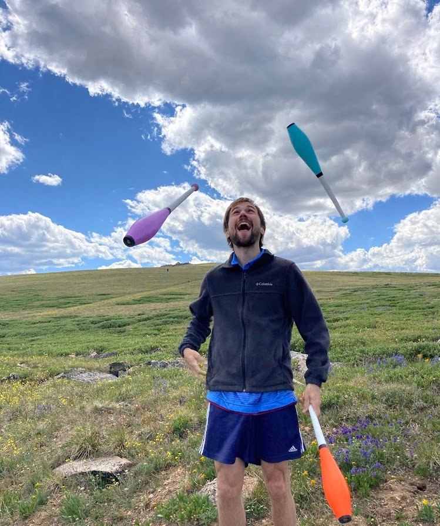
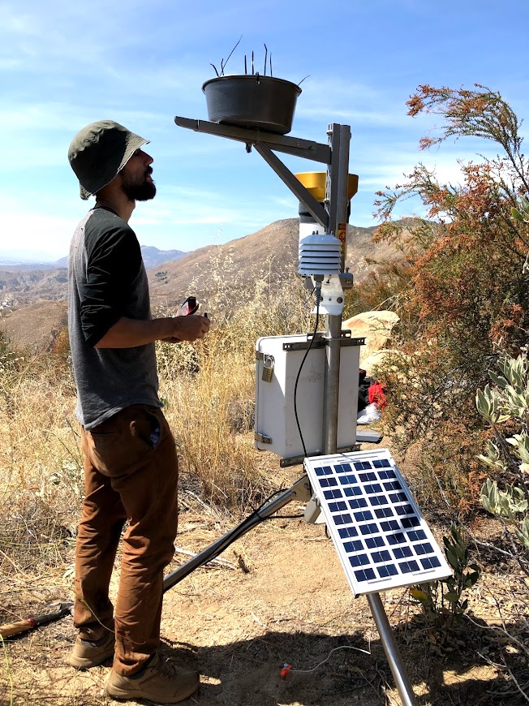
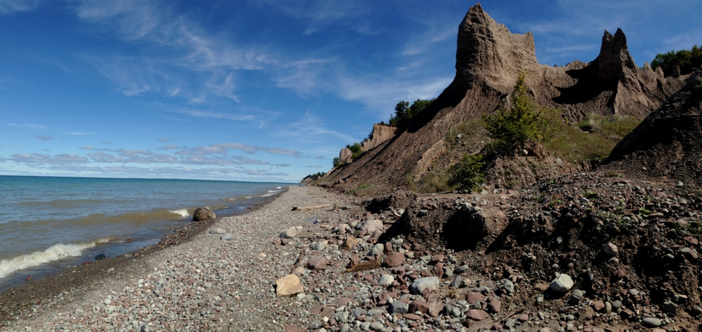
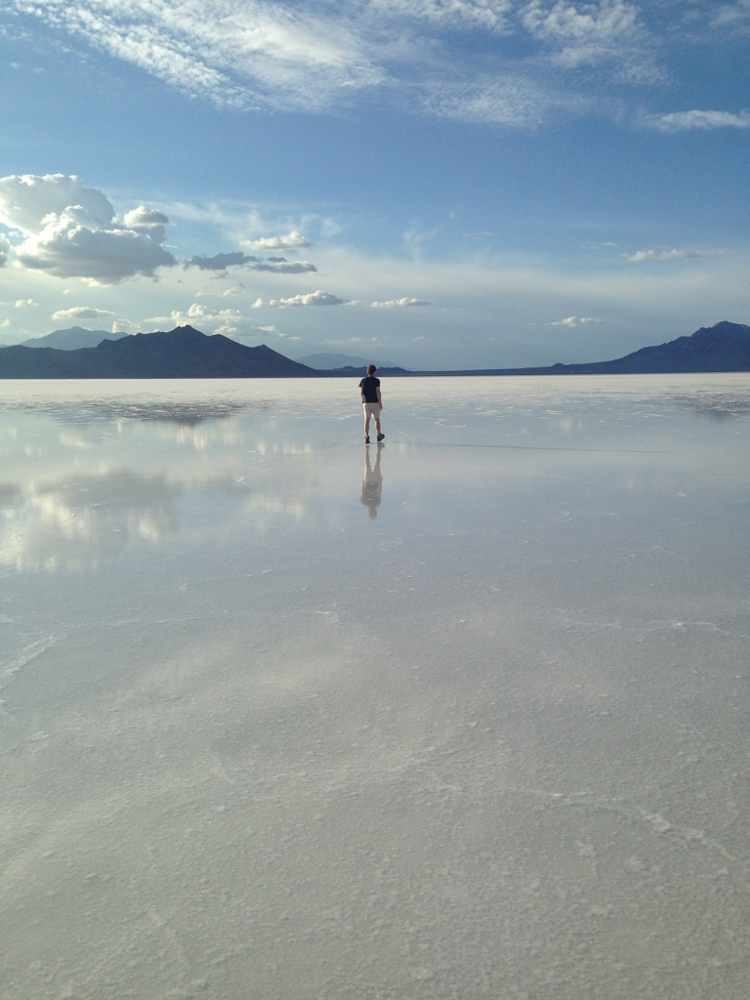

Photos

Juggling along the Beartooth highway, 2020
p.s. If you are interested in siteswap I have a notebook for visualizing vanilla siteswaps here .
p.s. If you are interested in siteswap I have a notebook for visualizing vanilla siteswaps here .

Me setting up a dust trap on top of a weather station in San Jacinto, CA - photo by Kai Hu

On the snake river near Pullman

Chimney Bluffs, upstate NY

Salt flats of Utah